01 · ABOUT
"Low-level programmer with a mild procrastination habit. I'm Astoris — I spend most of my time reading other people's source and poking at the weird corners of languages. Fewer layers. Closer to the metal. Honest programs. Not shipping anything loud yet — more forks, more notebooks, more tabs left open overnight. |
 |
02 · /NOW
reading → claude-code source
poking → symbolic regression in mathematica
building → permanent-portfolio · astoris.dev
avoiding → anything with a framework in the namelast edited by hand — /now is a ritual, not a feed.
03 · THE STACK I REACH FOR
the short list. the long list is in my shell history.
04 · STATS, LIVE
05 · A SNAKE, EATING MY CONTRIBUTIONS
※ snake SVG appears here after the first snake.yml Action run.
(preview placeholder — actual image lives at github.com/.../output/github-snake.svg)
06 · PLAYING RIGHT NOW
— nothing playing. probably deep in a man page. —
07 · QUOTE, DAILY
"Simplicity is prerequisite for reliability." — Edsger W. Dijkstra
08 · HIDDEN
$ cat .bashrc | tail -n 1
alias plz='sudo $(fc -ln -1)'you scrolled this far. here's a second one:
function cd() { builtin cd "$@" && ls; }
# small, sharp, quiet. like the rest of this readme.$ man astoris
NAME
astoris — low-level programmer, mild procrastination habit
SYNOPSIS
astoris [--reading <source>] [--poking <language>]
[--avoiding <framework>] [--shipping? no]
DESCRIPTION
A small, sharp program. Takes longer than estimated.
Produces honest output. No telemetry. No ceremony.
FILES
~/astoris/permanent-portfolio the canonical site
~/astoris/.config/philosophy.md fewer layers
~/astoris/.config/signoff.md hand-written HTML & opinions
BUGS
procrastinates. see ISSUES.md (eventually).
SEE ALSO
astoris.dev(7), github(7), coffee(1)$ ./easter-egg --verbose
╭──────────────────────────────╮
│ ※ │
│ you are the 01 person │
│ to read this far. │
│ │
│ (yes, 01 in binary. │
│ low-level joke.) │
│ │
│ — astoris │
╰──────────────────────────────╯drop me a line: astoris@example.com — subject line 0b1 for priority.
※ hand-written HTML & opinions · no trackers · astoris.dev